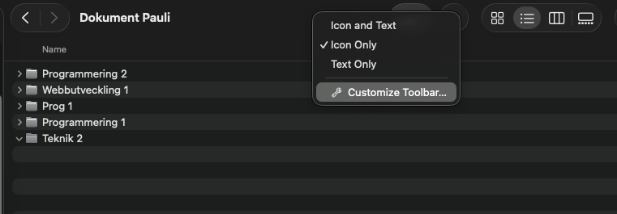
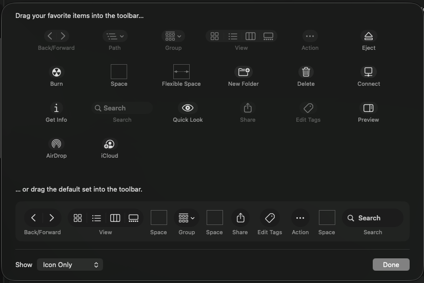

Digital grundkompetens · Finder
Anpassa Finder: lägg till Sökväg (Path)
Med knappen Sökväg ser du var den öppna mappen ligger och kan hoppa direkt till en mapp högre upp i hierarkin.
Varför är Sökväg så användbart?
En mapp kan heta Uppgifter i flera kurser. Sökvägen visar sammanhanget: ligger du i Programmering 1 eller Teknik? Du kan kontrollera platsen innan du öppnar, flyttar eller organiserar filer.
Exempel: Du är i Dokument → Teknik → Projekt → Bilder. Klicka på Sökväg och välj Teknik för att gå direkt dit, utan att backa genom varje mapp.
- Hitta rätt: se vilka mappar den aktuella mappen ligger i.
- Färre klick: gå direkt till en överordnad mapp.
- Skilj på liknande mappar: kontrollera hela sammanhanget när flera mappar har samma namn.
Knappen visar platsen för den öppna mappen. Den visar inte automatiskt sökvägen till varje markerad fil.
1. Öppna Anpassa verktygsfält
- Öppna ett Finder-fönster.
- Högerklicka på en tom yta i verktygsfältet högst upp. På styrplattan kan du klicka med två fingrar.
- Välj Anpassa verktygsfält… (Customize Toolbar… på engelska).
Du kan också välja Innehåll → Anpassa verktygsfältet i Finders menyrad. På engelska heter menyn View → Customize Toolbar….

2. Dra in Sökväg (Path)
- I fönstret med tillgängliga verktyg: hitta Sökväg, som heter Path på engelska. I bilden nedan ligger den på översta raden, som andra verktyg från vänster.
- Dra verktyget till önskad plats i Finder-fönstrets verktygsfält. Släpp när knapparna flyttar sig och ger plats.
- Välj gärna Symbol och text (Icon and Text) i menyn längst ned om du vill se namnen på knapparna.
- Klicka på Klar (Done).
Du kan lägga till fler verktyg på samma sätt, exempelvis Ny mapp. Välj de verktyg du använder ofta.

3. Använd knappen
- Öppna en mapp som ligger inuti flera andra mappar.
- Klicka på den nya knappen Sökväg / Path i verktygsfältet. Den har en liten nedåtpil och en symbol med förskjutna linjer.
- Läs listan med den aktuella mappen och dess överordnade mappar.
- Välj en mapp i listan för att öppna den direkt.
Prova: öppna en undermapp i en kursmapp och gå tillbaka till kursmappen med Sökväg.
Visa även sökvägsfältet längst ned
Vill du se mapphierarkin hela tiden? Välj Innehåll → Visa sökvägsfält (View → Show Path Bar). Då visas platsen längst ned i Finder-fönstret.
Skillnaden: Sökväg-knappen öppnar en meny i verktygsfältet. Sökvägsfältet visar platsen löpande längst ned. Du kan använda båda.
Om du vill ändra igen
Öppna Anpassa verktygsfält på nytt för att lägga till eller ta bort verktyg. Du kan också hålla ned ⌘ och dra en knapp för att flytta den inom verktygsfältet, eller dra ut den för att ta bort den.
Om en knapp inte syns kan Finder-fönstret vara för smalt. Bredda fönstret eller öppna menyn för fler verktygsfältsobjekt.
Kontrollera att du kan
- Lägga till Sökväg i verktygsfältet.
- Förklara var din öppna mapp ligger.
- Hoppa direkt till en överordnad kursmapp.
Läs mer: Apple: Anpassa verktygsfältet i Finder och Apple: information och sökvägar för filer och mappar.